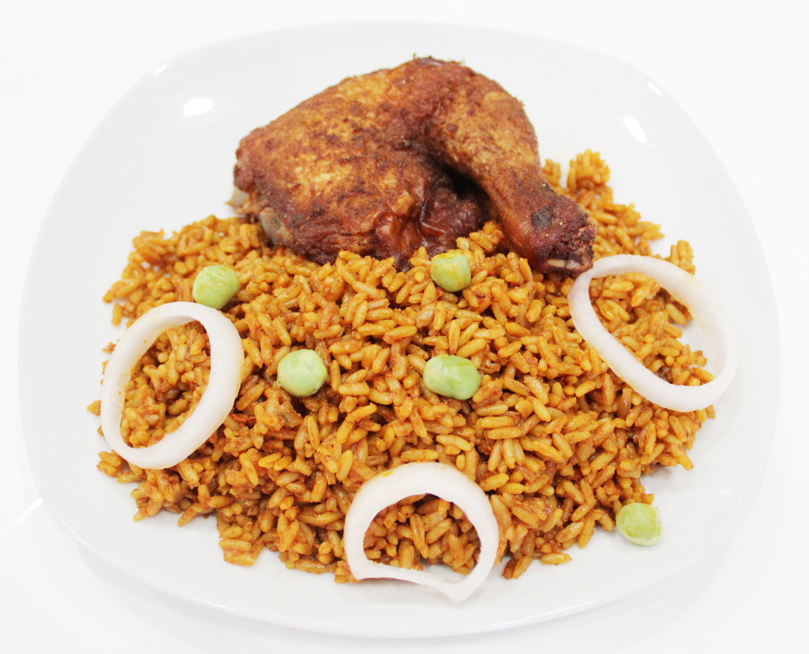

Jollof Rice

Description
To make decilious Nigerian jollof, you need the following ingredients:
- Rice
- Vegetable oil
- Tomato paste
- Chicken or beef
- etc.
Steps
Follow these steps to make jollof rice:
- Boil the rice until it's half-done
- Wash the rice
- Heat the vegetable oil a little
- Add onions and tomato paste
- etc.